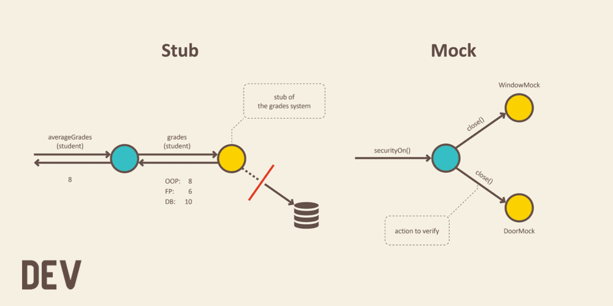
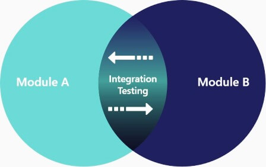
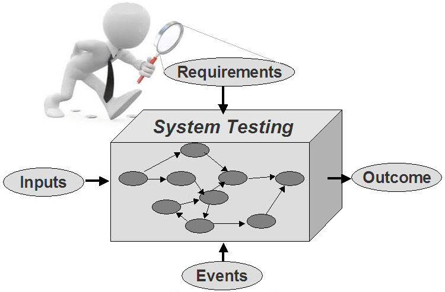
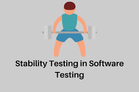
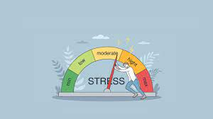
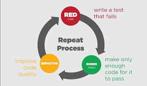
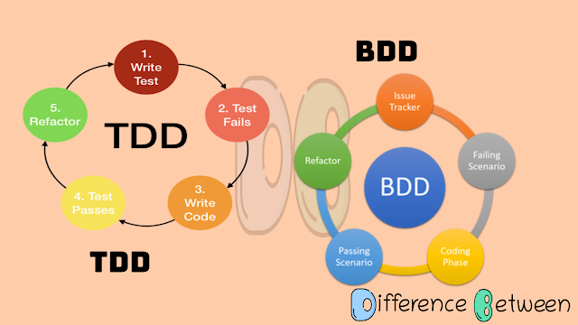

Testing
— checking the correspondence between real and expected behavior, is performed on a set of tests that are selected in some way.by level of testing:
unit, integration, system
Unit Testing is performed by the developers themselves, because it assumes full access to the code, to test any one logically separated and isolated element (module) of the system in the code, checks functionality and searches for defects in the parts of the application that are available and can be tested separately (program modules, objects, classes, functions, etc.).
Integration Testing is aimed at checking the correctness of interaction of several modules combined into a single whole, i.e. the interaction between system components after component testing is tested.
System Testing (E2E, Functional) — is the verification of both functional and non-functional requirements in the system as a whole. It identifies defects such as incorrect utilization of system resources, unintended combinations of user-level data, incompatibility with the environment, unintended usage scenarios, etc., and evaluates the system's quality characteristics - its stability, reliability, security, and performance.

TESTING TYPES
on performance:
load, stability, stress
Load testing — this type of testing allows you to evaluate the behavior of the system under increasing load, the purpose of load testing is also to determine the maximum load that the system can handle.
Stability testing — allows you to test the system performance over a long period of time. In this case, the load may not reach peak values, but have average values, as well as the time of execution of operations is not the main factor in assessing the results of testing.
Stress testing — the purpose of this type of performance testing is to evaluate system performance at workload thresholds or beyond workload limits. It is also possible to evaluate system performance when changing the resources available to the system, such as CPU time, memory, network bandwidth, etc.
miscellaneous: security testing
Security and Access Control Testing - is a testing strategy used to verify the security of a system, and to analyze the risks associated with providing a holistic approach to protecting the application, hacker attacks, viruses, unauthorized access to sensitive data.
F.I.R.S.T.
F – Fast
I – Independent
R – Repeatable
S – Self-Validating
T – Timely
TDD и BDD
TDD (Test Driven Development).
TDD и BDD
BDD (Behavior Driven Development).
Frameworks
- MochaJS
- Jest
- Jasmine
- Karma
- Puppeteer (Node Library)
- NightwatchJS
- Cypress
- Playwright (Node Library)
- Selenium
List of references used
Load Testing vs Performance TestingSoftware testing theory
Security testing
How and why to write tests
Testing pyramid
Different approaches to testing
F.I.R.S.T.
TDD
BDD
Frameworks